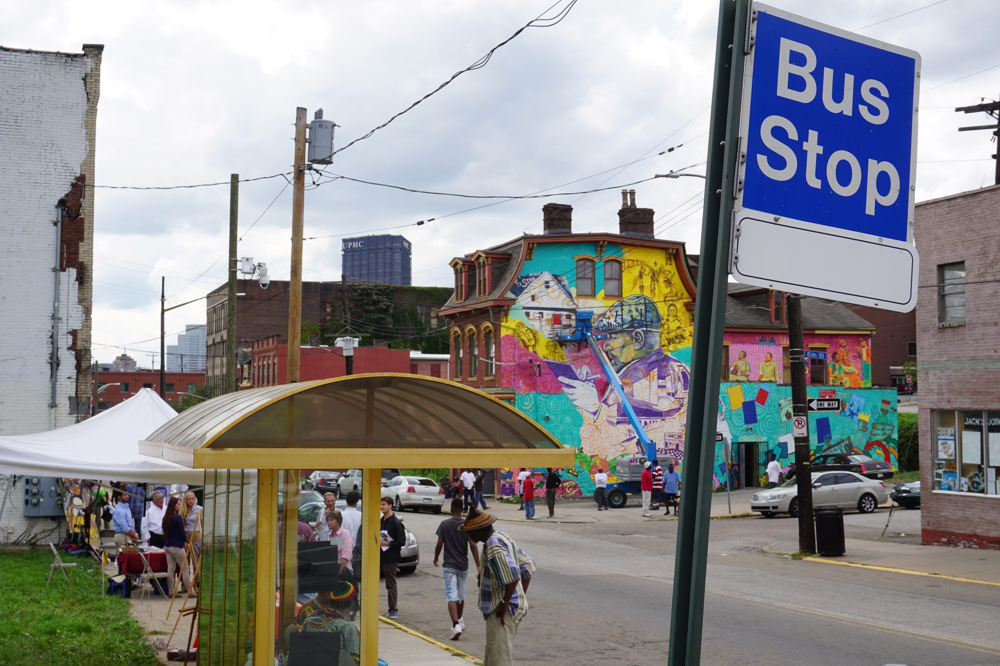

|  | The 93 is the best way to Lawrenceville from either South or Central Oakland. It stops at the bus stop on the Boulevard of the Allies opposite Juliet. It runs up to central campus and along fifth. It goes directly to Butler Street. Butler Street has its own bus too, that can take you from one end of Lawrenceville to the other. |